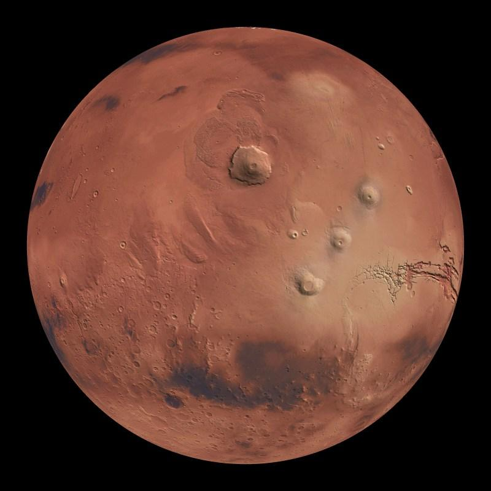

Kosmos-bu cheksiz va sirli olamdir. Unda milliardlab yulduzlar, Sayyoralar va gallaktikalar mavjud. Olimlar hali ham kosmosning ko'plab sirlarini o'rganishda davom etishmoqda.
Quyosh Tizimi
Quyosh tizimi markazida Quyosh joylashgan. Uning atrofida 8 ta sayyora aylanadi.
1.Merkuriy
Quyoshga eng yaqin sayyora.
Harorati juda yuqori.
Atmosferasi deyarli yo'q.
2.Venera
Eng issiq sayyora.
Qalin atmosfera bilan o'ralgan.
"Yerning egizagi" deb ataladi.
3.Yer
Hozircha hayot mavjud bo'lgan yagona sayyora.
70% qismi suv bilan qoplangan.
8 millartdan ortiq aholi yashaydi.
4.Mars
Qizil sayyora deb ataladi.
Unda Olyumpus Mons dep nomlangan ulkan tog' mavjud.
Kelajakda insonlar yashashi mumkin bo'lgan sayyora sifatida o'rganilmoqda.

Mars haqida qiziqarli ma'lumotlar
Mars Quyoshdan to'rtinchi sayyora hisoblanadi. Uning yuzasi temir oksidi bilan qoplanganligi sababli qizil rangda ko'rinadi.
Diametri: 6779 km
Yo'ldoshlari: Fobos va Deymos
Bir kuni: 24 soat 37 minut
Bir yili: 687 Yer kuni
NASA va boshqa agentliklar Marsni faol o'rganmoqda.
Kosmos Tadqiqotlari
Bugungi kunda NASA, ESA va SpaceX kabi tashkilotlar
Oy, Mars va boshqa sayyoralarni tadqiq qilish ustida ishlamoqda.
Artemis dasturi - insonlarni Oyga qaytarish.
Perseverance - Marsda ishlayotgan rover.
James Webb - eng kuchli kosmik teleskop.
Kosmos haqida video
Quyidagi videoda kosmos va sayyoralar haqida batafsil ma'lumot olishingiz mumkin:
Xulosa
Kosmos insoniyat uchun eng qiziqarli va hali to'liq o'rganilmagan
sohalardan biridir. Olimlar har yili yangi kashfiyotlar
qilishmoqda va kelajakda insonlarning boshqa sayyoralarda yashashi
ehtimoli ham mavjud.